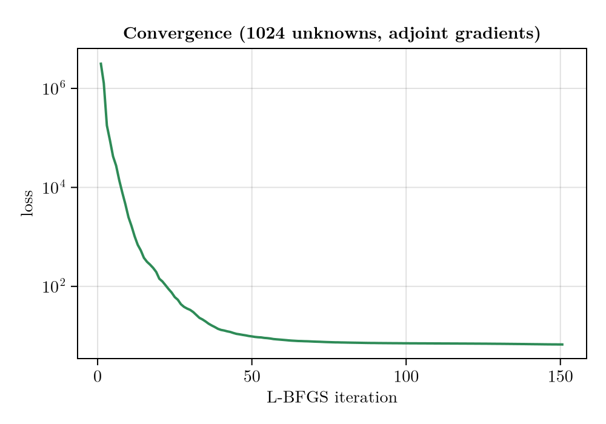
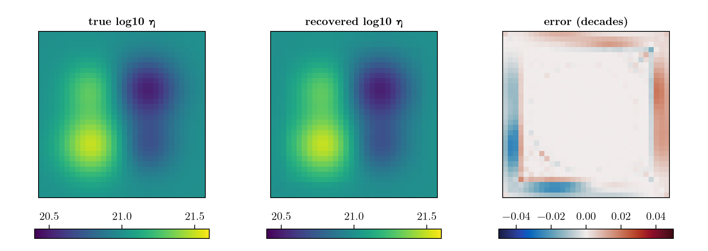

Full-field viscosity inversion
The Inverse calibration example recovered a mantle-viscosity field from uplift data — but it did so by assuming the answer's shape: the field was encoded as a background plus four Gaussians, and only 19 numbers were unknown. That is a strong prior. What if we do not know that the field is made of four Gaussians?
This example drops the assumption entirely and inverts the full 2-D viscosity field: every grid cell is its own free parameter, so on a 32×32 grid there are 1024 unknowns and no encoding at all. The 4-Gaussian pattern is never told to the optimizer — it has to emerge from the data.
Why this needs the adjoint
Full-field inversion is what AdjointMode exists for. Its cost is independent of the number of parameters: one reverse sweep through the checkpointed trajectory yields the entire 1024-component gradient. TangentMode (forward mode) would need one forward run per parameter — 1024 runs per gradient — which is why forward mode is reserved for the low-dimensional encoded problems of the previous two examples.
That difference is what makes this example possible at all: as the timings below show, the whole 1024-unknown inversion — 150 L-BFGS iterations, each a full $10 \, \mathrm{kyr}$ forward and reverse sweep — finishes in well under a minute. Rebuilding the same gradient in forward mode would cost ~1024 forward runs each iteration, turning that sub-minute inversion into one that grinds for hours.
Passing nothing instead of an AbstractEncoding selects the full-field control: θ is the flattened log10 viscosity field (column-major, so reshape(θ, size(domain.X)) is the map), and the physical field is 10^θ. Working in log10 keeps the optimization variable O(1)-conditioned even though viscosity spans decades.
using FastIsostasy, CairoMakie, Optim
using Enzyme, Checkpointing # Enzyme + Checkpointing activate the adjoint engine
using PrintfFixed configuration and the known ice load
Identical to the Inverse calibration setup: a 32×32 grid, a $10 \, \mathrm{kyr}$ glacial cycle, and a single broad Vialov dome ($2000 \, \mathrm{km}$ radius) following the glacial-cycle sawtooth. The dome is deliberately broad so that the whole region of interest sits under load and is therefore sensed by the deformation — viscosity is only recoverable where the ice actually stresses the mantle.
As in the previous two examples, the $10 \, \mathrm{kyr}$ cycle is a compressed stand-in for a realistic $\sim 100 \, \mathrm{kyr}$ one (see the note in Inverse calibration). It matters most here: at a fixed $500 \, \mathrm{yr}$ step the full-length cycle would make each forward and each reverse sweep ten times longer, and this example runs 150 L-BFGS iterations plus a four-value λ sweep on top. The adjoint's headline property — cost independent of the number of unknowns — is unaffected by the cycle length, which is the point being demonstrated.
W, n = 3.0e6, 5
domain = RegionalDomain(W, n)
knot_times = [0.0, 5.0e3, 8.0e3, 9.0e3, 1.0e4]
t_span = (0.0, 1.0e4)
function vialov_dome(dom, xc, yc, L, Hc)
r = @. sqrt((dom.X - xc)^2 + (dom.Y - yc)^2)
return @. Hc * max(1 - (r / L)^(4 // 3), 0)^(3 // 8)
end
H_dome = vialov_dome(domain, 0.0, 0.0, 2.0e6, 2.5e3)
H_snapshots = [s .* H_dome for s in [0.0, 0.4, 1.0, 0.5, 0.0]]
function build_sim()
it = TimeInterpolatedIceThickness(knot_times, H_snapshots, domain)
bcs = BoundaryConditions(domain, ice_thickness = it)
se = SolidEarth(domain; lithosphere = LaterallyVariableLithosphere(),
layer_boundaries = [88.0e3], layer_viscosities = [1.0e21])
opts = SolverOptions(; show_progress = false, transition = SmoothTransition(10.0),
integ = EulerIntegrator(dt = 500.0))
nout = NativeOutput(t = Float64[], vars = Symbol[], T = Float64)
return Simulation(domain, bcs, RegionalSeaLevel(), se, t_span;
opts = opts, nout = nout)
end
sim = build_sim() Computation domain: RegionalDomain{Float64, Matrix{Float64}, Matrix{Float64}, CPU}
Physical constants: PhysicalConstants{Float64}
Problem BCs: BoundaryConditions{Float64, Matrix{Float64}, TimeInterpolatedIceThickness{Float64, Matrix{Float64}, TimeInterpolation2D{Float64, Matrix{Float64}}}}
Sea level: RegionalSeaLevel{LaterallyConstantSeaSurface, NoSealevelLoad, ConstantBSL{Float32, ReferenceBSL{Float32, TimeInterpolation0D{Float32}}}, InternalBSLUpdate, GoelzerVolumeContribution, NoAdjustmentContribution, GoelzerDensityContribution}
Solid Earth: SolidEarth{Float64, Matrix{Float64}, Matrix{Bool}, LaterallyVariableLithosphere, ViscousMantle, NoCalibration, CompressibleMantle, FreqDomainViscosityLumping, IncompressibleLithosphereColumn}
Solver options: SolverOptions{SmoothTransition{Float64}, EulerIntegrator{Float64}, ComplexFFTBackend}
GIATools: GIATools{ConvolutionPlanHelpers{Float64, Matrix{Float64}, Matrix{ComplexF64}, FFTW.rFFTWPlan{Float64, -1, false, 2, Tuple{Int64, Int64}}, FastIsostasy.NormalizedPlan{FFTW.rFFTWPlan{ComplexF64, 1, false, 2, UnitRange{Int64}}, 0.0002519526329050139}}, ConvolutionPlan{Matrix{Float64}, Matrix{ComplexF64}}, ConvolutionPlan{Matrix{Float64}, Matrix{ComplexF64}}, ConvolutionPlan{Matrix{Float64}, Matrix{ComplexF64}}, FastIsostasy.EmptyConvolution, FFTW.cFFTWPlan{ComplexF64, -1, false, 2, Tuple{Int64, Int64}}, FastIsostasy.NormalizedPlan{FFTW.cFFTWPlan{ComplexF64, 1, false, 2, UnitRange{Int64}}, 0.0009765625}, FastIsostasy.PreAllocated{Matrix{Float64}, Matrix{ComplexF64}, Array{ComplexF64, 3}}}
Reference state: ReferenceState{Float64, Matrix{Float64}, Matrix{Float64}}
Current state: CurrentState{Float64, Matrix{Float64}, Array{Float64, 3}, Matrix{Float64}}
Netcdf output: NetcdfOutput{Float32, PaddedOutputCrop}
Native output: NativeOutput{Float64}
native t_out: Float64[]
nc t_out: Float32[]
n simulated observables: 0
nx, ny: [32, 32]
dx, dy: [187500.0, 187500.0]
Wx, Wy: [3.0e6, 3.0e6]
extrema(effective viscosity): (1.171875e21, 1.171875e21)
extrema(lithospheric thickness): (88000.0, 88000.0)
The ground-truth field
The truth is the same four-Gaussian structure as in Inverse calibration — two soft anomalies and two stiff ones on a log10 η = 21 background — but here we build it directly as a field, not through an encoding. Flattening it gives the 1024-component ground-truth control vector.
bump(X, Y, μx, μy, σ, amp) = @. amp * exp(-((X - μx)^2 + (Y - μy)^2) / (2σ^2))
X, Y = domain.X, domain.Y
logη_true = fill(21.0, size(X))
logη_true .+= bump(X, Y, -1.0e6, -1.0e6, 8.0e5, 0.5) # soft, SW
logη_true .+= bump(X, Y, 1.0e6, 1.0e6, 8.0e5, -0.5) # stiff, NE
logη_true .+= bump(X, Y, -1.0e6, 1.0e6, 7.0e5, 0.3) # soft, NW
logη_true .+= bump(X, Y, 1.0e6, -1.0e6, 7.0e5, -0.3) # stiff, SE
θ_true = vec(copy(logη_true))
@printf("number of unknowns: %d\n", length(θ_true))number of unknowns: 1024Synthetic full-field observations
We observe vertical uplift at every interior cell at five times through the cycle: 676 points × 5 times = 3380 measurements constraining 1024 unknowns. Even though that is nominally over-determined, the problem is still ill-posed: GIA spatially low-passes the load, so the map from viscosity to surface uplift is smoothing and non-local, and fine-scale viscosity detail leaves almost no signature in the data.
pts = [CartesianIndex(i, j) for i in 4:29 for j in 4:29]
obs_times = [2.0e3, 4.0e3, 6.0e3, 8.0e3, 1.0e4]
obs0 = Observation(VerticalUpliftObservable(), pts, obs_times,
zeros(length(pts) * length(obs_times)); σ = 0.5)
prob_gt = ParameterInversion(sim, nothing, [obs0]; diffmode = AdjointMode())
reconstruct!(sim, θ_true, nothing)
preds = FastIsostasy.allocate_predictions(prob_gt)
FastIsostasy.forward_predict!(preds, prob_gt)
data = copy(preds[1])
obs = Observation(VerticalUpliftObservable(), pts, obs_times, data; σ = 0.5)Observation{VerticalUpliftObservable, Float64, Float64}(VerticalUpliftObservable(), CartesianIndex{2}[CartesianIndex(4, 4), CartesianIndex(4, 5), CartesianIndex(4, 6), CartesianIndex(4, 7), CartesianIndex(4, 8), CartesianIndex(4, 9), CartesianIndex(4, 10), CartesianIndex(4, 11), CartesianIndex(4, 12), CartesianIndex(4, 13) … CartesianIndex(29, 20), CartesianIndex(29, 21), CartesianIndex(29, 22), CartesianIndex(29, 23), CartesianIndex(29, 24), CartesianIndex(29, 25), CartesianIndex(29, 26), CartesianIndex(29, 27), CartesianIndex(29, 28), CartesianIndex(29, 29)], [2000.0, 4000.0, 6000.0, 8000.0, 10000.0], [-1.4470982566985908, -1.8266811910880536, -2.268601047278711, -2.7646440940868553, -3.3061825939212355, -3.882008836449892, -4.4756208795898855, -5.07276773956612, -5.6461952243574265, -6.166371350716653 … 29.13581381396596, 28.178418819965373, 26.296252047533134, 23.859096972598007, 21.008115625557863, 17.997942718372475, 15.011722456602605, 12.209962848595051, 9.715704527016646, 7.5903249654620595], 0.5)Regularization
Because the inverse problem is ill-posed, a full-field inversion needs a prior. The natural one for a viscosity field is smoothness: we penalise $\lambda \sum \|\nabla \log_{10}\eta\|^2$ with a first-order TikhonovReg on the decoded field.
The value of λ looks alarming until you check the units: ∇log10η is measured in decades per metre, so on a $187 \, \mathrm{km}$ grid it is of order 10⁻⁶, and the summed squared gradient of the true field is only ~6·10⁻¹¹. λ therefore carries units of $\mathrm{m^2}$, and λ ≈ 10¹¹ is what brings the penalty to the same order as the final misfit.
reg(λ) = TikhonovReg(FieldTarget(Log10Viscosity()), Order1(); λ = λ)
mkprob(λ) = ParameterInversion(sim, nothing, [obs];
regularizations = (reg(λ),), diffmode = AdjointMode())
λ_best = 1.0e11
prob = mkprob(λ_best)ParameterInversion
Simulation t_span: (0.0, 10000.0)
Domain (nx, ny): (32, 32)
Encoding: full-field (θ = log10 viscosity map)
length(θ): 1024
# observations: 1
Observable(s): DataType[VerticalUpliftObservable]
total data points: 3380
extrema(extract_times): (2000.0, 10000.0)
# regularizations: 1
Diff mode: AdjointMode
Loss model: DefaultLoss
The initial guess
We start from a flat field — a uniform log10 η = 21 background, i.e. no knowledge whatsoever of the anomalies. Everything the optimizer learns about the four Gaussians comes from the uplift data.
θ0 = fill(21.0, length(θ_true))
@printf("loss(θ_true) = %.4e\n", loss(prob, θ_true))
@printf("loss(θ0) = %.4e\n", loss(prob, θ0))loss(θ_true) = 6.3854e+00
loss(θ0) = 3.3300e+06Gradient check
The adjoint gradient is validated against central finite differences on a few cells. Note the cost asymmetry: the whole 1024-component gradient comes from a single reverse sweep, whereas each FD check costs two extra forward runs.
The first gradient! call under AdjointMode triggers Enzyme's reverse transformation of the time-stepping kernel, which takes $\sim 10\text{–}12 \, \mathrm{min}$. It is cached for the rest of the session: the 150 L-BFGS iterations below then run in well under a minute.
g = similar(θ0)
FastIsostasy.gradient!(g, prob, θ0) # first call: pays the one-off compilation
fd(p, θ, i; ε = 1e-5) =
(e = zeros(length(θ)); e[i] = 1.0;
(loss(p, θ .+ ε .* e) - loss(p, θ .- ε .* e)) / (2ε))
for i in (400, 500, 550)
@printf("cell %4d: AD = % .5e FD = % .5e\n", i, g[i], fd(prob, θ0, i))
endcell 400: AD = -3.14882e+03 FD = -3.14883e+03
cell 500: AD = 1.14100e+05 FD = 1.14100e+05
cell 550: AD = -1.36475e+04 FD = -1.36475e+04What the adjoint buys us
With the compilation cached, we can measure the actual cost of a gradient. One adjoint sweep returns all 1024 derivatives for a small multiple of the cost of a single forward run — whereas forward mode would have to repeat that forward run once per unknown.
The forward-mode figure below is a conservative lower bound: it charges only one primal run per parameter, whereas an Enzyme forward pass actually costs several times a primal run. The real gap is wider than shown.
t_loss = @elapsed loss(prob, θ0)
t_grad = @elapsed FastIsostasy.gradient!(g, prob, θ0) # compilation now cached
@printf("one forward run (loss) : %7.3f s\n", t_loss)
@printf("one adjoint gradient (1024 dofs) : %7.3f s (%.1f× a forward run)\n",
t_grad, t_grad / t_loss)
@printf("forward-mode gradient (lower bound): %7.1f s (%d forward runs)\n",
length(θ0) * t_loss, length(θ0))
@printf(" → adjoint speed-up per gradient : %.0f×\n", length(θ0) * t_loss / t_grad)
@printf(" → 150 iterations would take : %.1f h in forward mode\n",
150 * length(θ0) * t_loss / 3600)one forward run (loss) : 0.003 s
one adjoint gradient (1024 dofs) : 0.951 s (363.4× a forward run)
forward-mode gradient (lower bound): 2.7 s (1024 forward runs)
→ adjoint speed-up per gradient : 3×
→ 150 iterations would take : 0.1 h in forward modeInversion
Because each gradient is cheap and parameter-count-independent, a 1024-unknown inversion converges in well under a minute.
t_opt = @elapsed result = solve!(prob, θ0;
optimizer = LBFGS(), iterations = 150, store_trace = true)
θ_hat = Optim.minimizer(result)
@printf("loss(θ̂) = %.4e\n", loss(prob, θ_hat))
@printf("optimization: %d iterations over %d unknowns in %.1f s (%.2f s/iteration)\n",
length(Optim.f_trace(result)), length(θ0), t_opt,
t_opt / length(Optim.f_trace(result)))loss(θ̂) = 6.6922e+00
optimization: 151 iterations over 1024 unknowns in 32.3 s (0.21 s/iteration)fig = Figure(size = (500, 350))
ax = Axis(fig[1, 1], xlabel = "L-BFGS iteration", ylabel = "loss", yscale = log10,
title = "Convergence (1024 unknowns, adjoint gradients)")
lines!(ax, Optim.f_trace(result), color = :seagreen, linewidth = 2)
fig
Recovery
Starting from a flat field, the inversion reconstructs the four-Gaussian pattern — both soft anomalies and both stiff ones, at the right places, with the right amplitudes — to a few thousandths of a decade RMS.
logη_hat = reshape(θ_hat, size(X))
rms(a, b) = sqrt(sum(abs2, a .- b) / length(a))
@printf("rms |Δlog10η| = %.4f decades\n", rms(θ_hat, θ_true))
@printf("max |Δlog10η| = %.4f decades\n", maximum(abs.(θ_hat .- θ_true)))rms |Δlog10η| = 0.0065 decades
max |Δlog10η| = 0.0261 decadesx = domain.x ./ 1e3
fig = Figure(size = (900, 320))
for (j, (Z, ttl, cmap, crange)) in enumerate((
(logη_true, "true log10 η", :viridis, (20.4, 21.6)),
(logη_hat, "recovered log10 η", :viridis, (20.4, 21.6)),
(logη_hat .- logη_true, "error (decades)", :balance, (-0.05, 0.05))))
ax = Axis(fig[1, j], aspect = DataAspect(), title = ttl)
hidedecorations!(ax)
hm = heatmap!(ax, x, x, Z, colormap = cmap, colorrange = crange)
Colorbar(fig[2, j], hm, vertical = false, width = Relative(0.8))
end
fig
How much regularization?
The smoothness prior is not cosmetic. Sweeping λ shows the classic trade-off — too little and the inversion fits noise-free data almost exactly but wanders in the poorly-constrained directions; too much and the recovered Gaussians get visibly flattened. The middle value genuinely recovers best:
t_sweep = @elapsed for λ in (0.0, 1.0e11, 1.0e12, 1.0e13)
p = mkprob(λ)
θh = Optim.minimizer(solve!(p, θ0; optimizer = LBFGS(), iterations = 150))
@printf("λ = %-8.0e loss = %.3e rms|Δlog10η| = %.4f max = %.4f\n",
λ, loss(p, θh), rms(θh, θ_true), maximum(abs.(θh .- θ_true)))
end
@printf("\nfour full 1024-unknown inversions in %.1f s\n", t_sweep)λ = 0e+00 loss = 2.618e-01 rms|Δlog10η| = 0.0092 max = 0.0372
λ = 1e+11 loss = 6.692e+00 rms|Δlog10η| = 0.0065 max = 0.0261
λ = 1e+12 loss = 6.253e+01 rms|Δlog10η| = 0.0103 max = 0.0497
λ = 1e+13 loss = 6.139e+02 rms|Δlog10η| = 0.0174 max = 0.0706
four full 1024-unknown inversions in 124.2 sAdding a modest amount of smoothing improves the reconstruction (rms drops from $\approx 0.009 \, \mathrm{decades}$ to $\approx 0.007 \, \mathrm{decades}$), because it suppresses exactly the fine-scale structure the data cannot see. Pushing λ two orders of magnitude further makes the penalty dominate and the recovery degrades to $\approx 0.017 \, \mathrm{decades}$ — the field is recovered only up to the regularization bias.
Note that the sweep re-runs the entire inversion four times over — and still takes only seconds, because every gradient is a single reverse sweep. Exploring prior strength this way is simply not affordable with forward-mode gradients.
Takeaways
- With the adjoint, the number of unknowns is essentially free: 1024-parameter and 19-parameter inversions cost the same per gradient. This is the difference between an inversion that runs in seconds and one that does not finish — and it is what lets us treat a whole inversion as a cheap inner loop (as in the
λsweep above). The price is Enzyme's one-off reverse-mode compilation. - A full-field inversion still needs a prior. GIA is a smoothing forward operator, so fine-scale viscosity structure is invisible to the data and must be supplied by regularization (or accepted as unresolved).
- The recovery here is flattered by noise-free, dense, full-field data. With real, sparse and noisy uplift records, expect a much smoother recovered field and use the
λsweep above as a template for choosing the prior strength (e.g. by an L-curve or cross-validation).
Copy-pastable code
using FastIsostasy, CairoMakie, Optim, Printf
using Enzyme, Checkpointing # both are needed for the adjoint engine
W, n = 3.0e6, 5
domain = RegionalDomain(W, n)
# 10 kyr toy cycle: scale knot_times, t_span and obs_times by 10 for a
# realistic ~100 kyr one (10x the forward and, if used, adjoint cost)
knot_times = [0.0, 5.0e3, 8.0e3, 9.0e3, 1.0e4]
t_span = (0.0, 1.0e4)
function vialov_dome(dom, xc, yc, L, Hc)
r = @. sqrt((dom.X - xc)^2 + (dom.Y - yc)^2)
return @. Hc * max(1 - (r / L)^(4 // 3), 0)^(3 // 8)
end
H_dome = vialov_dome(domain, 0.0, 0.0, 2.0e6, 2.5e3)
H_snapshots = [s .* H_dome for s in [0.0, 0.4, 1.0, 0.5, 0.0]]
it = TimeInterpolatedIceThickness(knot_times, H_snapshots, domain)
bcs = BoundaryConditions(domain, ice_thickness = it)
se = SolidEarth(domain; lithosphere = LaterallyVariableLithosphere(),
layer_boundaries = [88.0e3], layer_viscosities = [1.0e21])
opts = SolverOptions(; show_progress = false, transition = SmoothTransition(10.0),
integ = EulerIntegrator(dt = 500.0))
nout = NativeOutput(t = Float64[], vars = Symbol[], T = Float64)
sim = Simulation(domain, bcs, RegionalSeaLevel(), se, t_span;
opts = opts, nout = nout)
# no encoding: theta IS the flattened log10 viscosity field (1024 unknowns)
bump(X, Y, mx, my, s, a) = @. a * exp(-((X - mx)^2 + (Y - my)^2) / (2s^2))
X, Y = domain.X, domain.Y
logeta_true = fill(21.0, size(X))
logeta_true .+= bump(X, Y, -1.0e6, -1.0e6, 8.0e5, 0.5)
logeta_true .+= bump(X, Y, 1.0e6, 1.0e6, 8.0e5, -0.5)
logeta_true .+= bump(X, Y, -1.0e6, 1.0e6, 7.0e5, 0.3)
logeta_true .+= bump(X, Y, 1.0e6, -1.0e6, 7.0e5, -0.3)
theta_true = vec(copy(logeta_true))
pts = [CartesianIndex(i, j) for i in 4:29 for j in 4:29]
obs_times = [2.0e3, 4.0e3, 6.0e3, 8.0e3, 1.0e4]
obs0 = Observation(VerticalUpliftObservable(), pts, obs_times,
zeros(length(pts) * length(obs_times)); σ = 0.5)
prob_gt = ParameterInversion(sim, nothing, [obs0]; diffmode = AdjointMode())
reconstruct!(sim, theta_true, nothing)
preds = FastIsostasy.allocate_predictions(prob_gt)
FastIsostasy.forward_predict!(preds, prob_gt)
obs = Observation(VerticalUpliftObservable(), pts, obs_times, copy(preds[1]); σ = 0.5)
# an ill-posed full-field problem needs a smoothness prior
reg = TikhonovReg(FieldTarget(Log10Viscosity()), Order1(); λ = 1.0e11)
prob = ParameterInversion(sim, nothing, [obs];
regularizations = (reg,), diffmode = AdjointMode())
# start from a flat field; the first gradient pays Enzyme's ~10 min compilation
theta0 = fill(21.0, length(theta_true))
result = solve!(prob, theta0; optimizer = LBFGS(), iterations = 150,
store_trace = true)
theta_hat = Optim.minimizer(result)
@printf("loss: %.3e -> %.3e\n", loss(prob, theta0), loss(prob, theta_hat))